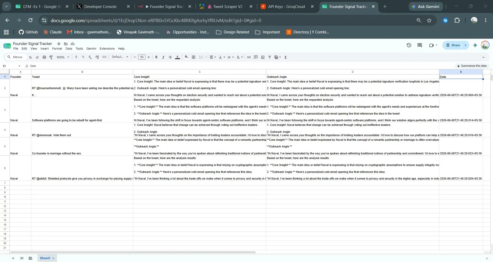

How It Works
Four nodes. End to end.
Schedule Trigger fires every 6 hours. HTTP Request pulls latest tweets from Apify. AI Agent sends each tweet to Groq and extracts insight and outreach angle. Google Sheets logs everything.
n8n — Founder Signal Tracker workflow

real output — Naval Ravikant
Tweet
"Software platforms are going to be rebuilt for agent-first."
Core Insight
Naval believes traditional software architecture is being replaced by agent-centric design, shifting the entire stack.
Outreach Angle
"I've been following the shift towards agent-centric platforms and think our approach aligns with where software is heading — would love to share what we're seeing."
Google Sheets — live output
